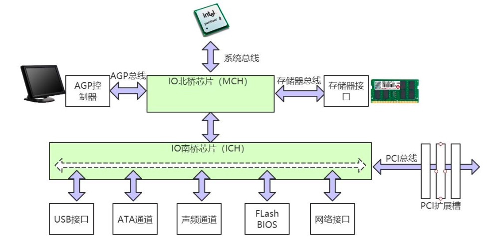
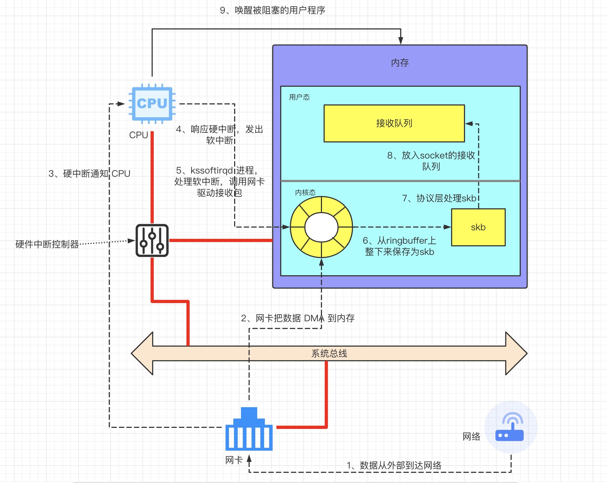
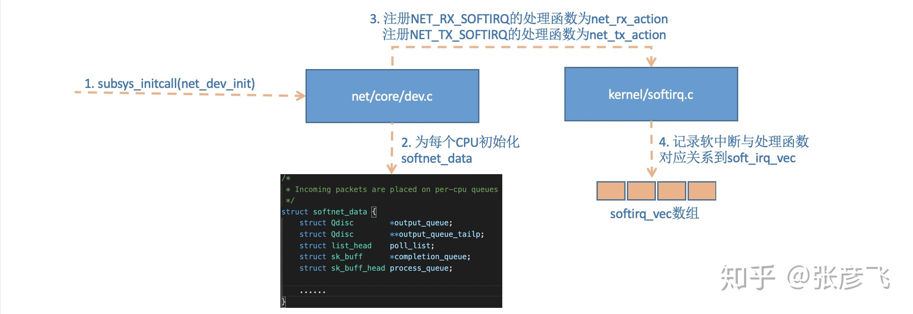

计算机结构
中断概念
内核和设备驱动是通过中断的方式来处理的，从本质上来讲，中断是一种电信号，当设备有某种事件发生时，它就会产生中断，通过总线把电信号发送给中断控制器。
如果中断的线是激活的，中断控制器就把电信号发送给处理器的某个特定引脚。处理器于是立即停止自己正在做的事，跳到中断处理程序的入口点，进行中断处理。
硬中断
由与系统相连的外设(比如网卡、硬盘)自动产生的。主要是用来通知操作系统系统外设状态的变化。比如当网卡收到数据包的时候，就会发出一个中断。我们通常所说的中断指的是硬中断(hardirq)。
软中断
为了满足实时系统的要求，中断处理应该是越快越好。linux为了实现这个特点，当中断发生的时候，硬中断处理那些短时间就可以完成的工作，而将那些处理事件比较长的工作，放到中断之后来完成，也就是软中断(softirq)来完成。
软中断与硬中断的关系
以接收微信消息为例，当用户接收到一条消息时，网卡会给 cpu 的中断引脚发出一个高电平。 cpu 能够捕获这个信号，然后执行网卡的中断程序。
对于网络模块来说，由于处理过程比较复杂和耗时，如果在中断函数中完成所有的处理，将会导致中断处理函数(优先级过高)将过度占据 CPU，将导致 CPU 无法响应其它设备（例如鼠标和键盘的消息）。
因此 Linux 中断处理函数是分上半部和下半部的。上半部是只进行最简单的工作，快速处理然后释放 CPU，接着 CPU 就可以允许其它中断进来。剩下将绝大部分的工作都放到下半部中，可以慢慢从容处理。
kernel 2.4 以后的内核版本采用的下半部实现方式是软中断，由 ksoftirqd 内核线程全权处理。和硬中断不同的是，硬中断是通过给 CPU 物理引脚施加电压变化，而 软中断是通过给内存中的一个变量的二进制值以通知软中断处理程序
硬中断与软中断的区别
软中断是执行中断指令产生的，而硬中断是由外设引发的。
硬中断的中断号是由中断控制器提供的，软中断的中断号由指令直接指出，无需使用中断控制器。
硬中断是可屏蔽的，软中断不可屏蔽。
硬中断处理程序要确保它能快速地完成任务，这样程序执行时才不会等待较长时间，称为上半部。
软中断处理硬中断未完成的工作，是一种推后执行的机制，属于下半部。
SKB: struct sk_buff 结构
Struct sk_buff 是 linux TCP/IP stack 中，用于管理 Data Buffer 的结构。sk_buff 在数据包的发送和接收中起着重要的作用。为了提高网络处理的性能，应尽量避免数据包的拷贝。
网络接收包流程
首先看下网络包接收的大概流程图

目前 Linux 协议栈在接收数据的时候，需要拷贝两次：数据包进入网卡驱动后拷贝一次，从内核空间递交给用户空间的应用时再拷贝一次。
当网卡上收到数据以后的流程
ksoftirqd 检测到有软中断请求到达，调用 poll 开始轮询收包，收到后交由各级协议栈处理。最后会被放到用户 socket 的接收队列中。
接收数据包的准备工作
创建 ksoftirqd 内核进程
Linux 的软中断都是在专门的内核进程(ksoftirqd)中进行的，因此我们非常有必要看一下这些进程是怎么初始化的，这样我们才能在后面更准确地了解收包过程。
该进程数量不是一个，而是每个处理器都有一个这样的线程，每个线程的名字为ksoftirqd/n，n为处理器的编号。
例如双核 CPU 的机器：
>ps -ef| grep ksoftirqd
>root 3 2 0 Dec23 ? 00:00:00 [ksoftirqd/0]
>root 14 2 0 Dec23 ? 00:00:00 [ksoftirqd/1]
系统初始化的时候会创建 softirqd 进程。
当 ksoftirqd 被创建出来以后，它就会进入自己的线程循环函数不停地判断有没有软中断需要被处理。这里需要注意的一点是，软中断不仅仅只有网络软中断，还有其它类型(例如键盘、鼠标、打印机等)。
网络子系统初始化

每个CPU都有自己的传入帧队列，由于每个CPU都有自己的数据结构来管理入口和出口流量，因此不需要在不同的CPU之间进行任何锁定。该队列的数据结构 softnet_data 在include/linux/netdevice.h 中，定义如下：
struct softnet_data
{
int throttle;
int cng_level;
int avg_blog;
// 入口帧排队队列
struct sk_buff_head input_pkt_queue;
// 带有等待处理的输入帧的设备的双向列表
struct list_head poll_list;
// 要传输的设备的列表
struct net_device *output_queue;
//已经成功传输并因此可以释放的缓冲区的列表
struct sk_buff *completion_queue;
//已安排net_rx_action以便在关联的CPU上执行的设备,非 NAPI 驱动程序使用此字段。该名称代表“积压设备”
struct net_device backlog_dev;
}
该结构包括用于接收的字段和用于发送的字段。换句话说，NET_RX_SOFTIRQ和NET_TX_SOFTIRQ软irq都引用该结构
linux 内核通过 net/core/dev.c 中 net_dev_init 函数进行网络子系统的初始化，在这个函数里，会为每个 CPU 都申请一个 softnet_data 数据结构，同时会给每一种软中断都注册一个处理函数。比如网络处理中发送中断 NET_TX_SOFTIRQ 的处理函数为 net_tx_action，接收中断 NET_RX_SOFTIRQ 的处理函数为 net_rx_action。
net_dev_init 函数如下所示
for (i = 0; i < NR_CPUS; i++) {
struct softnet_data *queue;
queue = &per_cpu(softnet_data,i);
skb_queue_head_init(&queue->input_pkt_queue);
queue->throttle = 0;
queue->cng_level = 0;
queue->avg_blog = 10; /* arbitrary non-zero */
queue->completion_queue = NULL;
INIT_LIST_HEAD(&queue->poll_list);
set_bit(_ _LINK_STATE_START, &queue->backlog_dev.state);
queue->backlog_dev.weight = weight_p;
queue->backlog_dev.poll = process_backlog;
atomic_set(&queue->backlog_dev.refcnt, 1);
}
协议栈注册
内核实现了网络层的 ip 协议，也实现了传输层的 tcp 协议和 udp 协议。
这些协议对应的实现函数分别是 ip_rcv()，tcp_v4_rcv()和 udp_rcv()。和我们平时写代码的方式不一样的是， 内核是通过注册的方式来实现的。 在 net/ipv4/af_inet.c 中的 inet_init(void)负责网络协议栈注册。 通过 inet_init，将这些函数注册到了 inet_protos 和 ptype_base 两个数据结构中
inet_protos 记录着 udp，tcp 的处理函数地址，ptype_base存储着ip_rcv()函数的处理地址。 软中断中会通过 ptype_base 找到 ip_rcv 函数地址，进而将 ip 包正确地送到 ip_rcv()中执行。 在 ip_rcv 中将会通过 inet_protos 找到 tcp 或者 udp 的处理函数，再而把包转发给 udp_rcv() 或 tcp_v4_rcv()函数。
网卡驱动初始化和启动网卡
这部分的工作包括分配内存、注册中断处理函数，注册供内核使用的函数、开启硬中断等等工作。
Socket 的创建
调用链：
主要的工作则是:
和 Linux 文件系统挂钩;
使用协议族来初始化 socket，在前面的初始化过程中，我们知道有个协议栈注册过程， 找到内核初始化时注册的协议域，然后调用其 create 方法进行 socket 实例的创建;
初始化和 socket 通信有关的缓冲区、队列等等;
接收数据的到来
从网络接收数据
首先当数据帧从网线到达网卡上的时候，第一站是网卡的接收队列。网卡在分配给自己的 RingBuffer 中寻找可用的内存位置，找到后 DMA 引擎会把数据 DMA 到网卡之前关联的内存里，这个时候 CPU 都是无感的。
当 DMA 操作完成以后，网卡会向 CPU 发起一个硬中断，通知 CPU 有数据到达。CPU 调用网卡注册的硬中断处理函数，这个处理过程非常短。只是记录了一个寄存器，修改了一下 CPU 的 softnet_data 中的列表，告诉 CPU 当前有设备有数据需要处理，然后发出个软中断， 硬中断工作就算是完成了。
网络子系统处理
在网络子系统初始化小节，我们看到为 NET_RX_SOFTIRQ 注册了处理函数 net_rx_action， 这个函数中的核心逻辑执行就是执行网卡驱动注册到 softnet_data 中的函数，把数据帧从 RingBuffer 上取下来，被送到协议栈中，从数据包中取出协议信息，然后遍历注册在这个协议上的回调函数列表，调用到了协议层注册的处理函数了。
对于 ip 包来讲，就会进入到 ip_rcv，IP 层处理完成后如协议注册小节看到 inet_protos 中保存着 tcp_rcv()和 udp_rcv()的函数地址。
这里将会根据包中的协议类型选择进行分发，在这里 skb 包将会进一步被派送到更上层的协议中，udp 和 tcp。
udp 和 tcp 层根据 skb 来寻找对应的 socket，当找到以后将数据包放到 socket 的接收队列中。
而我们一般网络编程里的读取数据方法，就是访问这个接收队列
参考